Services
What We Offer

Responsive
Looks great on any screen size!
Redesigned
Freshly redesigned for Bootstrap 4.
Favourited
Millions of users 🤍 Start Bootstrap!

Question
I moustache you a question...
This theme features are flexible, UX friendly sidebar menu and stock photos from our friends at Unsplash!
Looks great on any screen size!
Freshly redesigned for Bootstrap 4.
Millions of users 🤍 Start Bootstrap!
I moustache you a question...
A yellow pencil with envlopes on a clean, blue backdrop!
A dark blue background with a coloured pencil, a clip and a tiny ice cream cone!
Stawberries are such a tasty snack, especially with a little sugar on top!
A yellow workspace with some scissors, pencils, and other objects